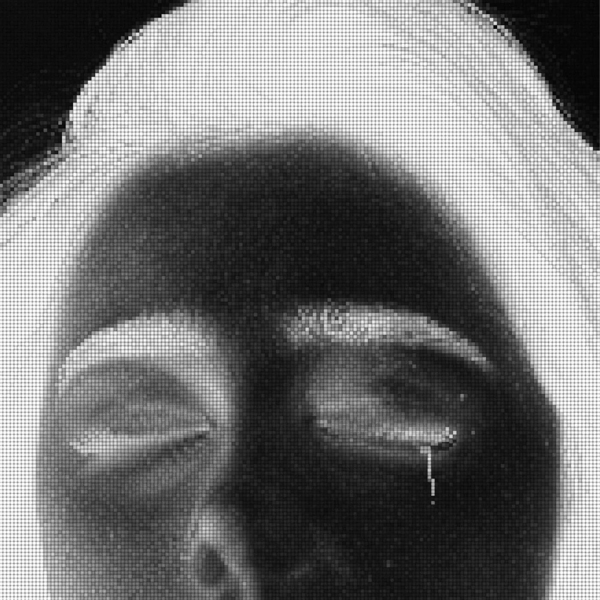

ReviewDec 12, 2022
Donuts
J Dilla's Donuts, Stones Throw, 7 February 2006: thirty-one short instrumentals, released three days before he died.
- format
- Review
- date
- Dec 12, 2022
- artists
- J Dilla
- words
- 729 words · 3 min
- catalogue
- CC003
Donuts came out on Stones Throw on 7 February 2006. James Dewitt Yancey, J Dilla, died on 10 February. The album is thirty-one instrumental tracks, most of them very short, made largely from samples. The proximity of the release to his death has dominated the listening ever since, and it should not be sanded off. It also should not be the only way in. A record that is only a funeral is a record you are afraid to learn from. Donuts is a manual.
The manual is about time. Dilla’s drums, on this album and on the productions that made his name with Slum Village, Erykah Badu, The Pharcyde, and a long list of others, sit behind and ahead of the grid in a way that became a cliché to describe and remained difficult to do. Hats are late. Snares are early or drunk or both. The loop does not resolve where a sequencer wants it to resolve. On Donuts the loops are short enough that you hear the decision every few bars: a soul phrase, a rock riff, a spoken scrap, flipped and left alone just long enough to register as a thought. “Workinonit,” “Time: The Donut of the Heart,” “Lightworks,” “Two Can Win,” “Last Donut of the Night,” “Welcome to the Show” — the titles are jokes and they are also a sequence. The album opens at the end, in the famous structural wink that makes the last track the introduction. A circle, a donut. The sleeve’s photograph, his face, slightly smiling, is part of the same tone. The music is playful at the level of the edit and serious at the level of the touch.
Stones Throw’s account, and his mother Maureen Yancey’s public account, place a lot of the album’s finishing in the period when he was hospitalized, with records brought to him. The illness — thrombotic thrombocytopenic purpura, and lupus — is part of the biography and not a style. What the music shows, independent of the hospital story, is an editor who had stopped needing long tracks to prove a beat was real. In 2006 the prestige version of instrumental hip-hop still owed something to DJ Shadow’s album-length architecture and to the idea of the producer as a composer of suites. Donuts says a suite can be made of fragments if the fragments have fingerprints. Nothing here auditions for a rapper, though almost everything here could hold one. The refusal is the point. The beat is the record.
For a listener who does not make beats, the way in is to notice how little is required once the ear is trusted. A loop that a more anxious producer would have doubled, filtered, and explained is left as a loop. The swing is the explanation. You can hear why a generation of producers treated the album as permission: permission to be short, to leave the sample recognizable, to let the rhythm limp if the limp was grooving. You can also hear the failed lesson, which is the part worth saying in a review. A limp copied without the ear is just a quantization preset called “Dilla.” The album is not a preset. It is a pile of specific records, chosen by someone who had been choosing specific records since he was a teenager in Detroit. The smile on the cover is the instruction not to turn the pile into homework. The lateness of the snare is the part that will not be faked by admiring him.
Heard beside the other instrumentals this magazine has written about — Shadow’s debut, the idea of a beat tape, L.T. Drifta’s short tracks on Summer Madness — Donuts is the one that made shortness a finished form in hip-hop’s instrumental wing. Drifta’s album is not Donuts and should not be reviewed as if it were. The comparison that is fair is formal. Both treat the brief track as a decision. Dilla’s decision sits on top of an enormous producing career and a death that froze the album in place. That freeze is why people approach it carefully. Care is right. Avoidance is not. The record wants to be played, including in a room where nobody is being reverent, because the edits are funny and the drums are social. Three days after it came out, he was gone. The circle of the sequence remains the liveliest thing about it.